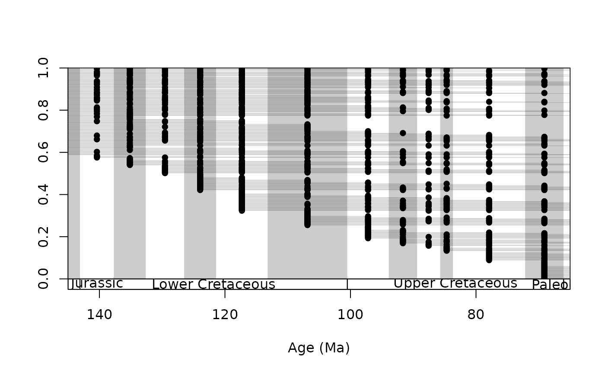
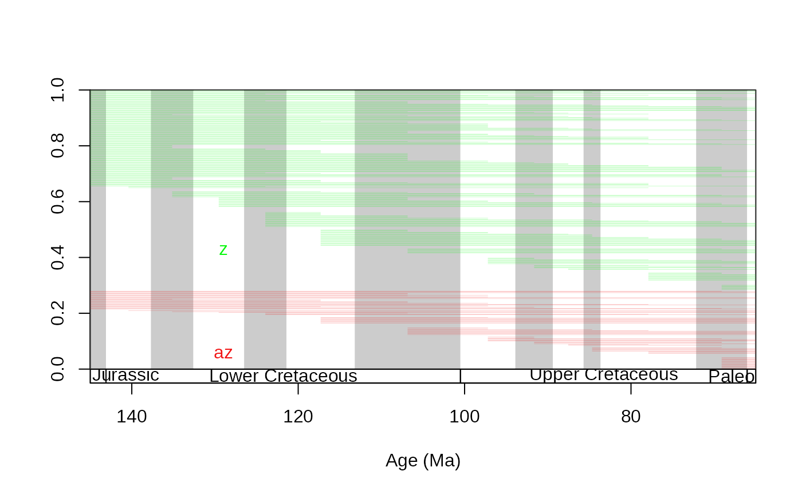
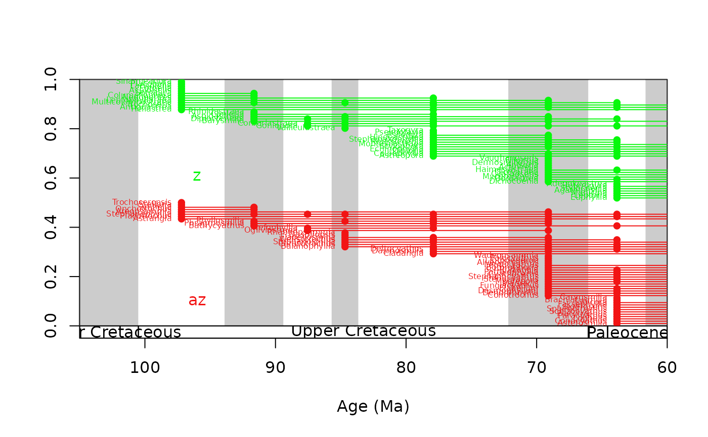
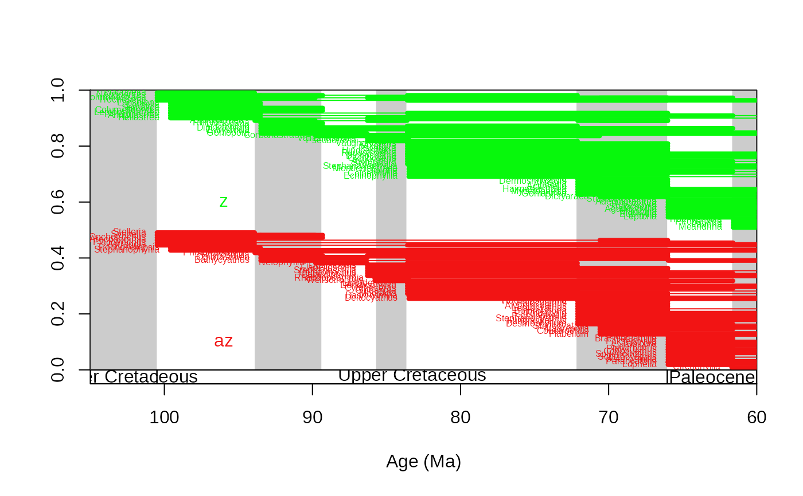
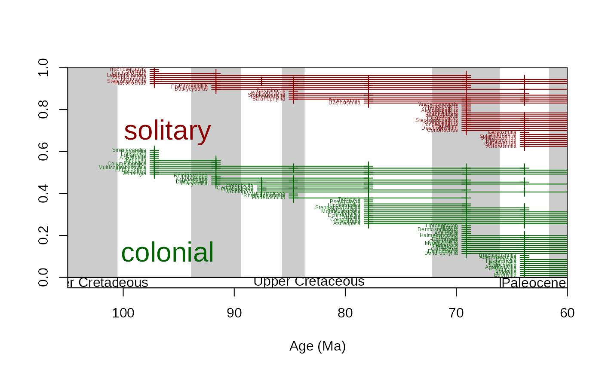

Visualization of occurrence data
Usage
ranges(
dat,
bin = NULL,
tax = NULL,
xlim = NULL,
ylim = c(0, 1),
total = "",
filt = "include",
occs = FALSE,
labs = FALSE,
decreasing = TRUE,
group = NULL,
gap = 0,
labels.args = NULL,
ranges.args = NULL,
occs.args = NULL,
total.args = NULL
)Arguments
- dat
(data.frame): The occurrence dataset or the FAD-LAD dataset that is to be plotted. The FAD dataset must have numeric variables named"FAD"and"LAD". Taxon ranges will be searched for in therow.namesattribute of the table.- bin
(
character): The column(s) containing the entries of the time dimension. Use one column name if you have one estimate for the occurrences and use two if you have a minimum and a maximum estimate. Reveresed axis (ages) are supported too.- tax
(
character): The column containing the taxon entries.- xlim
(
numeric) :This argument is used for the subsetting of the taxa. Only those taxa are shown that have ranges within the interval (but ranges are displayed outside of it, if you do not want to plot anything within an interval, use theclipfunction)- ylim
(
numeric): Ranges will be distributed equally between the assigned ylim values. If set to NULL, than it will be based on the plotting area of the open device.- total
(
character): The name of the range group to be plotted. When multiple groups are used (seegroupargument), this is set by thecharactervalues in the column.- filt
(
character): When xlim filters the taxa, how should they be filtered."include"(default) will show all ranges that have parts within thexliminterval."orig"will show only those taxa that originate within the interval.- occs
(
logical): Should the occurrence data be plotted? If you entered two bin column names, than occurrences will be plotted with the ranges of the estimates (segments).- labs
(
character): Should the taxon labels be plotted?- decreasing
(
logical): This parameter sets whether the series of ranges should start from the topdecreasing=TRUEor bottom of the plotdecreasing=FALSE.- group
(
character): By default, all ranges in the plot are treated as parts of the same group. However, one subsetting variable can be named, by which the ranges will be grouped. This has to be a column name in the dataset (see examples).- gap
(
numeric): Evaluated only when thegroupargument points to a valid column. The amount of space between the group-specific range charts, expressed as the proportion of the entire plotting area.- labels.args
(
list): Arguments that will be passed to thetextfunction that draws the labels of taxa. If valid grouping is present (see argumentgroup), then vector entries will be distributed across the groups (see examples.)- ranges.args
(
list): Arguments that will be passed to thesegmentsfunction that draws ranges. If valid grouping is present (see argumentgroup), then vector entries will be distributed across the groups (see examples.)- occs.args
(
list): Arguments that will be passed to thepointsorsegmentsfunctions that draw the occurence points/lines. If you provided twobincolumns, occurrence lines will be drawn instead of points. If valid grouping is present (see argumentgroup), then vector entries will be distributed across the groups (see examples.)- total.args
(
list): Arguments that will be passed to thetextfunction that draws thetotallabel. If valid grouping is present (see argumentgroup), then vector entries will be distributed across the groups (see examples.)
Details
This function will draw a visual representation of the occurrence dataset. The interpolated ranges will be drawn, as well as the occurrence points.
Examples
# import
data(stages)
data(corals)
# all ranges - using the age uncertainties of the occurrences
tsplot(stages, boxes="sys", xlim=c(250,0))
ranges(corals, bin=c("max_ma", "min_ma"), tax="genus", occs=FALSE)
# or use single estimates: assign age esimates to the occurrences
corals$est<-stages$mid[corals$stg]
# all ranges (including the recent!!)
tsplot(stages, boxes="sys", xlim=c(250,0))
ranges(corals, bin="est", tax="genus", occs=FALSE)
# closing on the Cretaceous, with occurrences
tsplot(stages, boxes="series", xlim=c(145,65), shading="short")
ranges(corals, bin="est", tax="genus", occs=TRUE, ranges.args=list(lwd=0.1))

# z and az separately
tsplot(stages, boxes="series", xlim=c(145,65), shading="short")
ranges(corals, bin="est", tax="genus", occs=FALSE, group="ecology",
ranges.args=list(lwd=0.1))

# same, show only taxa that originate within the interval
tsplot(stages, boxes="series", xlim=c(105,60), shading="short")
ranges(corals, bin="est", tax="genus", occs=TRUE, group="ecology", filt="orig" ,
labs=TRUE, labels.args=list(cex=0.5))

# same using the age uncertainties of the occurrence age estimates
tsplot(stages, boxes="series", xlim=c(105,60), shading="short")
ranges(corals, bin=c("max_ma", "min_ma"), tax="genus", occs=TRUE, group="ecology", filt="orig" ,
labs=TRUE, labels.args=list(cex=0.5))

# fully customized/ annotated
tsplot(stages, boxes="series", xlim=c(105,60), shading="short")
ranges(
corals, # dataset
bin="est", # bin column
tax="genus", # taxon column
occs=TRUE, # occurrence points will be plotted
group="growth", # separate ranges based on growth types
filt="orig" , # show only taxa that originate in the interval
ranges.args=list(
lwd=1, # set range width to 1
col=c("darkgreen", "darkred") # set color of the ranges (by groups)
),
total.args=list(
cex=2, # set the size of the group identifier lablels
col=c("darkgreen", "darkred") # set the color of the group identifier labels
),
occs.args=list(
col=c("darkgreen", "darkred"),
pch=3
),
labs=TRUE, # taxon labels will be plotted
labels.args=list(
cex=0.4, # the sizes of the taxon labels
col=c("darkgreen", "darkred") # set the color of the taxon labels by group
)
)
